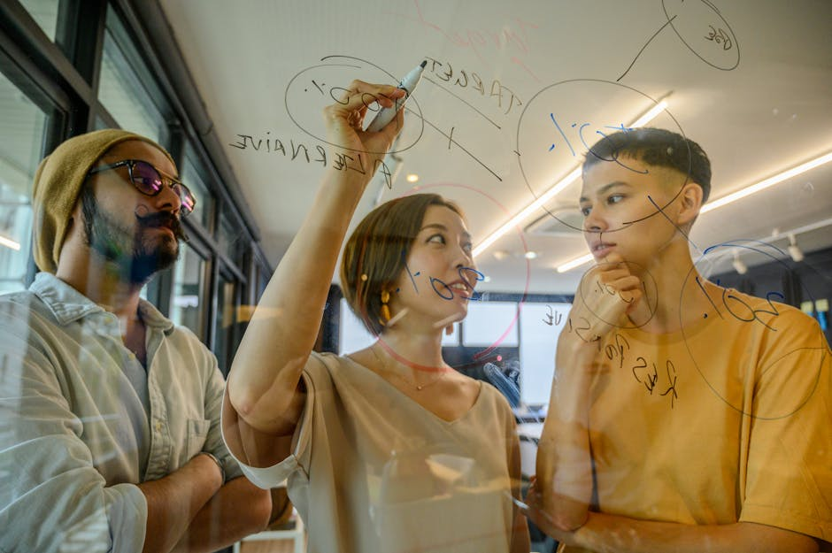

Esplora le frontiere dell'intelligenza artificiale
Osmatic Studio seleziona e analizza le notizie più rilevanti sul machine learning, i chatbot AI e le tecnologie del futuro per tenerti sempre un passo avanti.
Scopri le innovazioniLa nostra missione nell'era digitale
In un mondo guidato dall'intelligenza artificiale, rimanere aggiornati è diventato fondamentale. Osmatic Studio nasce come punto di riferimento essenziale per professionisti, aziende e appassionati che desiderano comprendere l'impatto reale delle nuove tecnologie.
Analizziamo quotidianamente i trend emergenti del machine learning, l'evoluzione dei chatbot AI e le complesse dinamiche dell'innovazione globale. Il nostro obiettivo principale è tradurre la complessità tecnica in informazioni chiare, strategiche e immediatamente fruibili per il tuo percorso di crescita.

Le Nostre Aree di Analisi
Approfondimenti mirati per padroneggiare le tecnologie del futuro.
Notizie e Innovazione
Monitoriamo costantemente il panorama globale per offrirti gli aggiornamenti più tempestivi sulle tecnologie del futuro. Dalle scoperte nei laboratori di ricerca alle applicazioni pratiche nell'industria, ti teniamo informato sulle innovazioni che stanno riscrivendo le regole del mercato.
Machine Learning
Guide approfondite e analisi dettagliate sui modelli di apprendimento automatico. Spieghiamo come gli algoritmi imparano dai dati, quali sono le architetture più promettenti e come il machine learning viene implementato per risolvere problemi complessi in diversi settori aziendali.

Ecosistema Chatbot AI
L'interazione uomo-macchina sta cambiando radicalmente. Analizziamo le capacità dei più avanzati chatbot AI, dai modelli linguistici di grandi dimensioni agli assistenti virtuali specializzati.
- Recensioni imparziali sui nuovi strumenti AI.
- Casi d'uso pratici per l'automazione del flusso di lavoro.
Cosa dice la nostra community
L'impatto delle nostre analisi sui professionisti del settore.
"Osmatic Studio è diventata la mia fonte quotidiana per capire dove sta andando l'intelligenza artificiale. Gli articoli sono puntuali e privi di tecnicismi inutili."
"Ottimi approfondimenti sul machine learning, spiegati in modo logico e comprensibile anche per chi, come me, non ha un background di programmazione."
"Le recensioni e le analisi comparative sui nuovi chatbot AI mi hanno aiutato enormemente a scegliere gli strumenti giusti da integrare nella mia azienda."
Domande Frequenti sull'AI
Cos'è esattamente l'intelligenza artificiale (AI)?
L'intelligenza artificiale è un ramo dell'informatica che si concentra sulla creazione di sistemi in grado di eseguire compiti che normalmente richiederebbero l'intelligenza umana. Questo include il riconoscimento visivo, la comprensione del linguaggio naturale, il processo decisionale e l'apprendimento automatico. Su Osmatic Studio esploriamo le sue applicazioni pratiche.
Come posso utilizzare il machine learning nel mio lavoro?
Il machine learning può essere applicato in quasi tutti i settori: dall'automazione dell'analisi dei dati, alla previsione delle tendenze di mercato, fino alla personalizzazione dell'esperienza cliente. I nostri articoli forniscono guide e casi studio per aiutarti a identificare le opportunità di implementazione più adatte al tuo settore.
Quali sono i migliori chatbot AI attualmente disponibili?
Il panorama dei chatbot AI è in rapida evoluzione. Strumenti basati su modelli linguistici avanzati offrono capacità straordinarie di redazione, analisi e programmazione. Sul nostro portale pubblichiamo regolarmente recensioni comparative per aiutarti a scegliere lo strumento più in linea con le tue esigenze specifiche.
Come rimanere aggiornati sulle tecnologie del futuro?
Il modo migliore è seguire fonti informative dedicate e analitiche. Osmatic Studio filtra il rumore di fondo del web per offrirti solo le notizie più rilevanti, gli sviluppi più significativi e le analisi più profonde sulle tecnologie emergenti.
L'innovazione AI sostituirà il lavoro umano?
Più che sostituire, l'AI sta trasformando la natura del lavoro. Molte mansioni ripetitive verranno automatizzate, permettendo ai professionisti di concentrarsi su compiti creativi, strategici e relazionali. L'obiettivo delle nostre guide è aiutarti a padroneggiare questi strumenti per aumentare la tua produttività, non per esserne sostituito.
Resta in contatto
Hai domande sulle nostre analisi o vuoi suggerire un argomento relativo all'intelligenza artificiale e all'innovazione? Compila il modulo e il team di Osmatic Studio prenderà in carico la tua richiesta.
Supporto Informativo
Disponibile dal Lunedì al Venerdì per richieste editoriali.